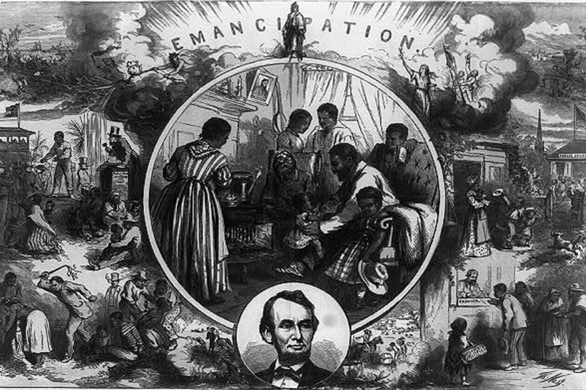

Civic Engagement
The Thirteenth Amendment

|
|
What does The Thirteenth Amendment mean? |
The Thirteenth Amendment to the United States Constitution, passed by Congress on January 31, 1865, and
ratified on December 6, 1865, abolished slavery throughout the United States. The text of the Thirteenth
Amendment is as follows:
"Section 1. Neither slavery nor involuntary servitude, except as a punishment for crime whereof the
party shall have been duly convicted, shall exist within the United States, or any place subject to
their jurisdiction.
Section 2. Congress shall have the power to enforce this article by appropriate legislation."
This amendment was a critical milestone in the history of the United States, as it effectively ended the
institution of slavery in the aftermath of the American Civil War. It was part of the larger process of
Reconstruction, during which the United States sought to rebuild and reunify the country after the Civil
War and establish civil rights for newly freed African Americans.
|
When was The Thirteenth Amendment set in place? |
The Thirteenth Amendment was passed by Congress on January 31st, 1865, and ratified on December 6, 1865.
On April 8, 1864, the Senate took the first crucial step toward the constitutional abolition of slavery.
Before a packed gallery, a strong coalition of 30 Republicans, four border-state Democrats, and four Union
Democrats joined forces to pass the amendment 38 to 6. In the months that followed, two test votes failed in
the House and the amendment was sidelined by the national election. Then, in December, representatives
convened a lame duck session to renew the debate. This set the stage for action in January of 1865 by the
newly reelected Abraham Lincoln. That is where the movie begins.
|
How did The Thirteenth Amendment effect the United States? |
With the ratification of the Thirteenth Amendment, four million African Americans—almost a third of the
population of the South—became permanently free and slavery was abolished in the United States.
Economic Effects:
- Many job opportunities opened up for people because of the lack of slaves
- Some farmers who couldn't afford to pay workers had to sell some of their land or maybe even all
of
it
- Following the passage of the 13th amendment, laws were passed to take advantage of this
constitutional
exception to pursue “for-profit” endeavors. Widespread laws criminalized petty behavior such as
loitering
and vagrancy—essentially defining homelessness and unemployment as crimes
Social Effects:
- African Americans had lots of trouble finding jobs because of the hatred towards their race in
the
south
- The interconnected relationship between the 13th amendment, U.S. incarceration rate, and
economic interests
continue today to sustain this “ecosystem” of modern slavery
- People's lives were dramatically altered immediately after the amendment was passed, both the
social
structure and the economic structure of the nation were affected
- Overall, the 13th amendment had a profound impact on the United States, both in terms of ending
slavery and
in terms of the economic and social changes that followed.
|
| Conclusion. |
The Thirteenth Amendment stands as a pivotal moment in American history, marking the abolition of slavery
and the dawn of a new era of freedom and equality. This landmark amendment not only liberated millions from
the shackles of servitude but also ushered in a transformative period of social and economic progress.
The Thirteenth Amendment's legacy extends far beyond the eradication of slavery. It served as a catalyst for
economic growth and innovation, as a newly empowered workforce contributed to the nation's development. It
strengthened democracy by expanding the franchise and fostering greater civic participation. And it
propelled the United States towards a future where the ideals of liberty and equality could truly flourish.
|